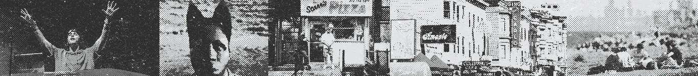

Design Practicum
As part of Northwestern's Bay Area Immersion Program, our team collaborated with Amazon Music on a 10-week design practicum focused on disrupting their platform to develop innovative ideas for future use. We were challenged with the following question:
To narrow down the problem space, I led interviews with 20+ Gen Z college-aged students to gain insight on their listening habits.
From these conversations we learned:
"I was able to make a new friend from posting my music on Instagram."
"Music is representative of your personality, so connecting with people through your music taste is validating."
"I feel good about myself when I share a song and they say they like it."
To guide the ideation process, we created two personas that represented the two different types of music listeners identified through our research.
Louise enjoys her personal music library but sometimes finds it repetitive. She turns to platforms like Spotify and Instagram to passively discover new music by exploring what friends are listening to and sharing.
Primary Goal:See what her friends are listening to without necessarily sharing her own music preferences.
Sally is passionate about sharing music. She's always first to post comments about new releases from her favorite artists via Instagram. She sees music as a crucial way to express herself and connect with others.
Primary Goal:Share her music taste as a form of self-expression. Form new connections through shared musical interests.


With our personas in mind, we held brainstorming sessions to explore multiple concepts and identify the most impactful solutions.


After extensive research and ideation, our team created initial mockups to present to potential users and Amazon Music stakeholders. These included basic grayscale wireframes and team-generated sketches. The feedback we received guided our design iterations and helped refine our final concepts.
The feedback we received helped us iterate on these designs.

A system of badges and customizable profile pages to add personalization to Amazon Music, transforming it into another form of self-expression:
Badges: Unlock by reaching listening milestones with favorite artists
Exclusive Event Badges: Obtain by attending concerts or special events
Customizable Profile Pages: Toggle between standard view and personalized virtual spaces
A dedicated tab where fans can connect, share recommendations, and discuss music, forming genuine communities around shared music interests.
A feature allowing friends to listen to music together and create shared playlists:
Democratize the queue system to ensure everyone's selections are played.
AI-powered song suggestions based on everyone's music taste when the queue ends.
A centralized sandbox within Amazon Music that:
Experiments with various digital experiences and live events.
Takes a playful approach to connecting individuals through music-related activities.
Makes it easier for users to discover local, live, and in-person events happening in their area.

At the end of the ten weeks, we presented our concepts to Amazon Music stakeholders at their San Francisco headquarters. Our goal was to encourage implementation and inspire new directions for the platform.

Whether developing fun concepts or bringing them to life through mini skits and personal anecdotes, embracing a sense of joy and creativity was essential to our success.
Fostering dynamic collaboration is the best way to stay energized, inspired, and innovative throughout the design journey.
Vibe-code basic prototypes to test with potential users. While our Figma designs captured the essence of each feature, using AI to create more interactive, fully functional prototypes for usability testing would have enabled quicker, more meaningful user feedback.